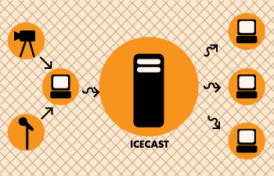
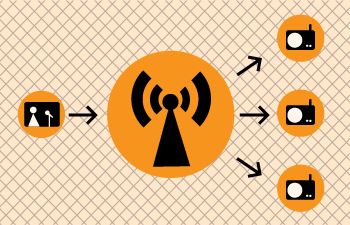
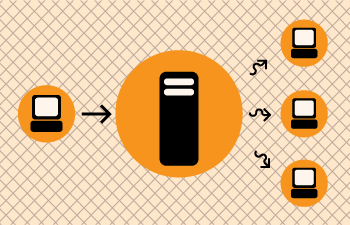

In the world of online audio and video there is a group of technologies and techniques refered to as streaming . Streaming, at its simplest, is the delivery of audio and video over the internet in realtime . Traditionally streaming has been used for delivering live internet radio, or for broadcasting events over the internet so you can watch them at home.
Streaming is often talked about using terms from the broadcasting industry as live internet audio and video are often seen as being analogous to broadcast television and radio. Hence you might talk about 'internet radio' to refer to live online audio. Sometimes people refer to sending live audio or video using streaming as 'broadcasting on the net' or as a 'internet broadcast'. These terms are helpful for helping us understand the intended purpose of streaming but don't take them too literally. However it is useful to refer to these models when explaining the role of Icecast.
With broadcast television or radio there is transmitter that distributes the signal sent from the studio, to your television or radio.

With internet broadcasting (streaming) you replace the transmitter with a
streaming server
, which is really a kind of software.

Icecast is this kind of software. It enables you to distribute live audio and video across the internet in realtime. Note that this is only part of the equation. You also need a stream encoder that can send the original audio or video stream to Icecast. Icecast distributes the stream, it does not create the stream - that's the job of the encoder.
Icecast is a very mature technology and very robust. It supports the delivery of many different formats of streaming audio (including MP3 and Ogg Vorbis) and it supports the delivery of Ogg Theora for streaming video. Icecast runs on Linux and Windows . If you wish to install it on Linux you will need to have some experience with Linux; specifically you will need to know a bit about how to install software from the command line, and be comfortable editing text based configuration files. The Windows installation process is a little bit more straight forward but you still need to be comfortable editing text based configuration files.
Installing and running Icecast is not recommended for inexperienced users.